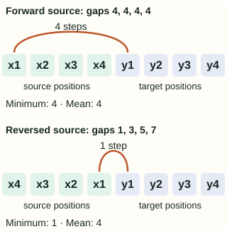

Sequence to Sequence Learning with Neural Networks
Translating a sentence requires more than predicting one label. The output may have a different length, a different word order, and an endpoint that must be predicted. An encoder–decoder separates reading the source from writing that output.
This companion follows red square → carré rouge. We use an original, hand-set probability table to make training and search inspectable. The numbers are not outputs from a fitted LSTM, and the example is not a reproduction of the paper’s translation system.
A fixed-width state is different from a fixed-length input
The feedforward language-model companion uses a fixed number of previous words. With a two-word window, “the red square” predicts its next word from the explicit inputs “red square”; “the” is outside that window. Reusing the predictor allows generation to continue, but does not enlarge its context window.
A recurrent network instead updates a state as each token arrives. For a source of length $T$, write $e(x_t)$ for the token embedding and $s_t$ for the recurrent state:
The same encoder parameters process every source position. A longer input means more applications of that update, not a wider input vector. The final state has fixed size, but depends on the entire sequence of updates. That permits information from earlier positions to affect the result; it does not guarantee that every earlier detail is retained accurately.
The decoder has its own parameters and recurrent state. Initialize it from the encoder summary, consume a beginning-of-sequence marker, and predict the first target token. Continue with target-side inputs until the model produces <EOS>. Our diagrams use explicit <BOS> and <EOS> markers for this interface.
red · squareThe desired output is carré · rouge. Output order need not match input order.
square → red → <EOS>Update the encoder state after each input. There is no French prediction paired with each English step.
For an LSTM, recurrent state includes hidden activations and cell memory. The decoder receives source information through this interface.
<BOS> → score carrécarré → score rougerouge → score <EOS>This is the reference-prefix path. During generation, the model supplies its own previous token instead.
What is inside an LSTM state?
An LSTM carries a cell-memory vector $c_t$ and a hidden-output vector $h_t$. The forget, input and output gates $f_t,i_t,o_t$ control retention, writing and exposure; $g_t$ is a candidate update. For a standard LSTM,
The symbol $\odot$ means elementwise multiplication. Gates depend on the current input and previous hidden state. Stacked layers carry their own states. Thus “pass the state” is more precise than imagining one scalar, or discarding the cell memory when wiring an implementation. The PyTorch LSTM specification gives the complete update and state shapes.
Specify all the choices in a tiny decoder
Hold the source red square fixed. Let the following table stand in for the decoder’s next-token distributions. Omitted tokens have probability zero. After either two-word output, this toy always emits EOS; this restriction keeps every path finite and equally long.
| Target prefix already supplied | Next-token distribution |
|---|---|
| Empty prefix | carré: 0.40 · cercle: 0.60 |
| carré | rouge: 0.90 · bleu: 0.10 |
| cercle | rouge: 0.50 · bleu: 0.50 |
| Any permitted two-word prefix | <EOS>: 1.00 |
carré means square; cercle means circle. This model prefers the wrong first word locally. That lets us examine a real distinction: scoring a supplied correct translation is not the same operation as generating a translation from scratch.
For a target $y_1,\ldots,y_L$, including its final EOS, multiply the probability of each token conditioned on the source $x$ and the preceding target prefix:
The probability of the reference carré rouge <EOS> is 0.40 × 0.90 × 1.00 = 0.36. Its negative log probability is $-\ln(0.36)\approx1.0217$. Every factor is conditional on its own prefix; using the probability of rouge after cercle would score a different path.
Training supplies the reference prefix; generation does not
During teacher forcing, the decoder input is the previous reference token. To score the next token, use inputs [BOS, carré, rouge] and labels [carré, rouge, EOS]. The one-position shift matters: the current label is not fed into its own prediction.
At step 1 our model assigns only 0.40 to carré and prefers cercle. Nevertheless, the teacher-forced second step receives carré. A greedy generation run instead chooses cercle at step 1 and supplies cercle at step 2. The distribution for the next word changes with that prefix. The PyTorch decoder tutorial shows this input switch explicitly.
PrefixEmpty
Input now<BOS>
Highest-probability tokencercle
Reference token scoredcarré · 0.40
Prefixcarré
Input nowcarré
Highest-probability tokenrouge
Reference token scoredrouge · 0.90
Prefixcarré rouge
Input nowrouge
Highest-probability token<EOS>
Reference token scored<EOS> · 1.00
A training update differentiates the reference log probabilities through the decoder, the source summary, and the encoder. It does not need to differentiate through greedy choices. Evaluating reference likelihood also uses the known prefix, so it can score translations the model would not generate. Report generation quality separately.
Generation stops on EOS. A real implementation also needs a maximum length in case EOS never appears; reaching that cap means truncation, not a successfully predicted endpoint. Padded positions used to batch examples are bookkeeping and should not become supervised target words.
Beam search changes the search, not the learned probabilities
Greedy decoding keeps only cercle, because 0.60 exceeds 0.40. Its next choice is rouge under our tie rule, giving 0.60 × 0.50 = 0.30. It has already discarded the carré branch, whose best continuation would have scored 0.36.
A width-two beam keeps both first-word prefixes. Expand each with the next word, multiply prefix and conditional probabilities, then retain the two best extended prefixes. In a real decoder, each branch also needs its own recurrent state; sharing one state across different histories would evaluate the wrong distributions.
After the first word
Expand the retained prefixes
Use sums of log probabilities in a numerical implementation to avoid multiplying many small numbers. A finite beam remains an approximation: a promising prefix can be pruned before its strong continuation appears. Here width two finds the best of all four possible outputs because we can enumerate them and check; that is not a general guarantee.
Training fits the conditional distributions. Beam search explores those fitted distributions after training. Better search can increase model probability without improving the actual translation if the model ranks a bad sentence highly. Likewise, a larger beam cannot recover an unknown word missing from the decoder vocabulary.
Reverse the source, not the target or translation direction
For our example, source reversal feeds square red to the encoder while the target stays carré rouge. It does not mean French-to-English translation, reversing character spellings, or feeding target words backward. Apply the same source transformation during training and evaluation.
Why could it help? Consider a separate, simplified alignment example: four source words $x_1,\ldots,x_4$ correspond in order to four targets $y_1,\ldots,y_4$. Place their word-processing positions on one timeline. Ignore boundary markers for this calculation, and define a gap as target position minus source position.

Before reversal, $y_1$ is at position 5 and $x_1$ at position 1, so their gap is 4. After reversal, $x_1$ is at position 4, so the gap is 1. The later pairs become farther apart: the last gap rises to 7. “Every dependency becomes shorter” would therefore misdescribe even this simple example.
This diagram illustrates the short-dependency explanation discussed in the paper’s §3.3; it is not a gradient calculation or a proof of improved translation. A recurrent update is order-sensitive, so reversal also changes the states themselves. The idea needs evaluation for a particular model and dataset.
Keep direct translation separate from reranking
The following are the paper’s WMT’14 English→French test results, using its tokenized, cased BLEU setup. “Reversed” describes source order.
| System and decoding route | BLEU |
|---|---|
| Phrase-based SMT baseline | 33.30 |
| Single forward LSTM · direct · beam 12 | 26.17 |
| Single reversed LSTM · direct · beam 12 | 30.59 |
| Five reversed LSTMs · direct · beam 12 | 34.81 |
| Five reversed LSTMs · rerank SMT’s 1,000-best list | 36.50 |
The 34.81 result uses five models, not one. The 36.50 result chooses among SMT-generated candidates by combining scores; it is not standalone neural generation. The single reversed model remains below the SMT baseline. Tables 1–2 and §§3.2, 3.6 provide the comparison.
What the fixed summary makes us ask next
In Figure 1, every source detail that influences decoding must pass through the final encoder state. The decoder cannot return to an earlier source position through a separate lookup. That makes a useful diagnostic question: when the output omits or confuses a detail, was the source information represented, retained and used?
The attention companion changes that interface by making source-position representations available during each decoding step. It still distinguishes supplied reference prefixes from generated prefixes. The subword companion addresses a separate issue: representing words outside a whole-word vocabulary. Neither change should be confused with widening a beam.
The standard-library reproduction script checks every constructed path, teacher-forced versus greedy inputs, both beam widths, and the reversal gaps. It writes the interactive figure data and the reversal SVG:
python3 blog/ml/recommended-papers/nlp/sutskever_seq2seq_demo.pyTo build an actual neural implementation, first verify the shifted decoder inputs, EOS handling, per-example state reset, source preprocessing, and padding mask on a tiny paired dataset. Then check whether it can fit that dataset and generate its targets without teacher forcing. Our probability table isolates the inference mechanics; it does not validate an encoder, LSTM gradients, or translation training.
References and further reading
- Sutskever, Vinyals & Le (2014): Sequence to Sequence Learning with Neural Networks — model, source reversal and reported translation results.
- PyTorch: sequence-to-sequence translation — encoder–decoder plumbing and teacher-forced versus generated inputs; its implementation uses GRUs and later adds attention.
- PyTorch: LSTM — gated state updates and hidden/cell-state shapes.